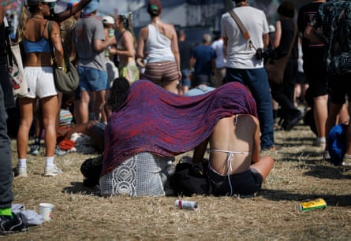
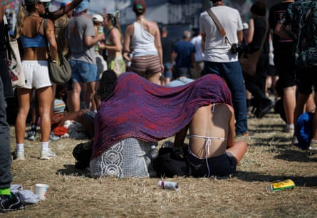
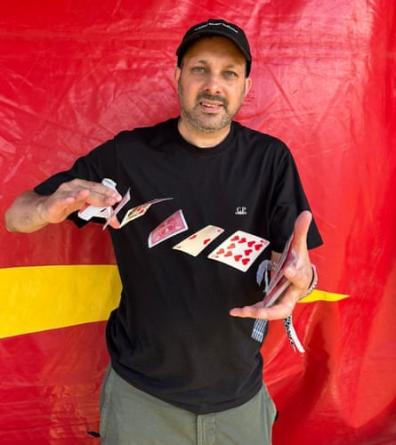
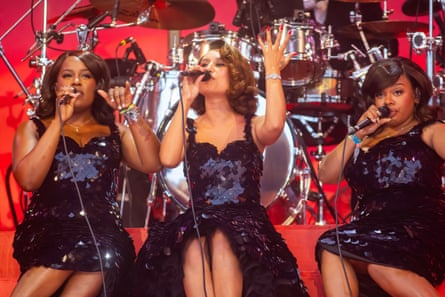
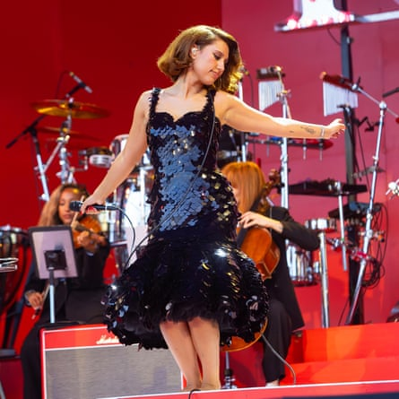
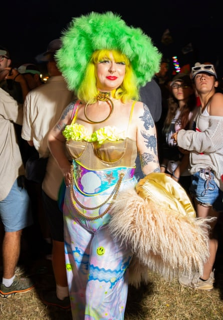
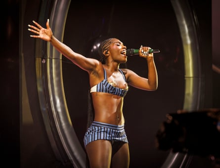
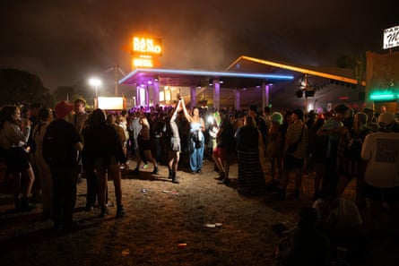

The sun hit hard on Saturday until late afternoon, and proved too much for some people.
 
Festivalgoers struggle in the heat by the Other stage. Photographs: Alicia Canter
Magician Steven Frayne – formerly known as Dynamo – appeared at a Guardian Live event early in the day, speaking to Zoe Williams and performing tricks for an excited audience.
Dynamo doing tricks at Guardian Live. Photograph by Kate Hutchinson
Febrile energy built up throughout the day ahead of Kneecap’s controversial appearance at West Holts, which was so busy that it was closed to entrants 45 minutes before the gig began.
Móglaí Bap of Kneecap at the West Holts stage. Photograph: David Levene
Flags abound as a huge crowd waits for Kneecap at West Holts. Photograph: Robyn Vinter
Pulp, the mystery Patchwork billing on the Pyramid stage, delivered an overwhelmingly euphoric set, with Jarvis on top form – and a cheeky appearance from the Red Arrows.
Jarvis Cocker of Pulp on the Pyramid stage.
Billy Bragg topped the bill at his own Left Field stage.
Billy Bragg at the Left Field stage.
Raye graced the Pyramid stage with a classy performance – “a huge red Vegas showgirl set complete with her name in Edison bulbs and the biggest and brassiest of big bands to fill it”, as described by Gwilym Mumford in his review.
Raye on the Pyramid stage.
On the Other stage later in the evening for Charli xcx, Brat summer was still alive and well in the tonsorial choices of some fans.
A Brat devotee at Charli xcx at the Other stage.
Alicia Canter was side of stage for US rapper Doechii, who gave an astoundingly theatrical performance on the West Holts stage.
Doechii headlining the West Holts stage.
The partying continued into the small hours at Levels, where Skream and Benga performed, while neighbouring San Remo gathered a crowd.
Late night revelry. Photographs by Jonny Weeks